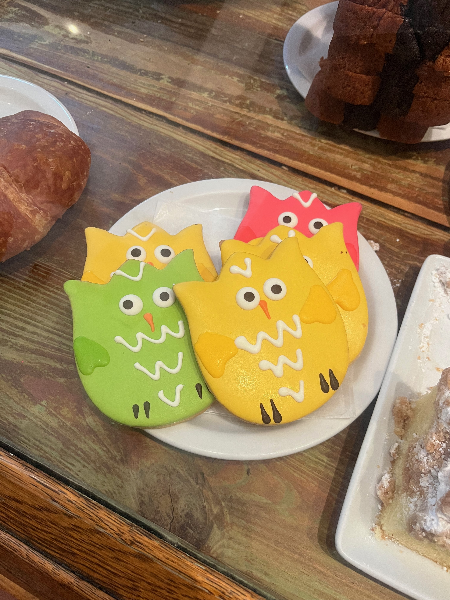

Photos

Banana slug!

First ever IRL salamander sighting!

Finally made it 22 miles later!

Funny looking owl cookies found in HMB!
Banana slug!
First ever IRL salamander sighting!
Finally made it 22 miles later!

Funny looking owl cookies found in HMB!